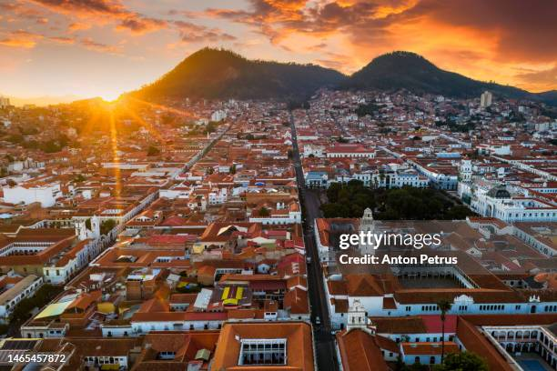

Sucre es la ciudad donde nací. Es conocida como la "Ciudad Blanca" por sus casas coloniales pintadas de blanco y es la capital constitucional de Bolivia. Me gusta su clima, su gente y su ambiente tranquilo.
Más información aquí: Sucre - Wikipedia